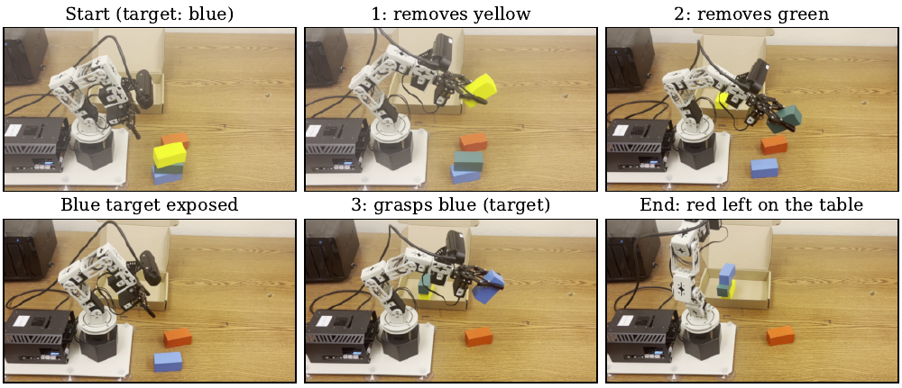
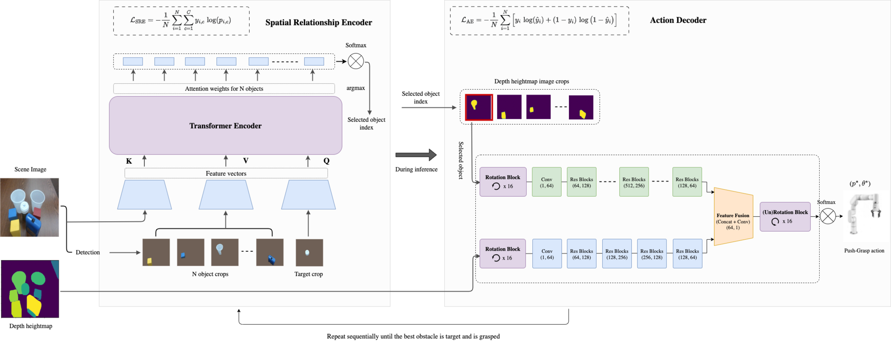
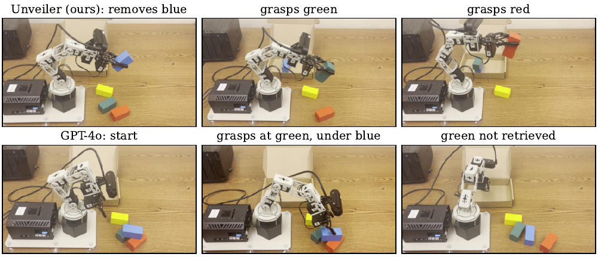
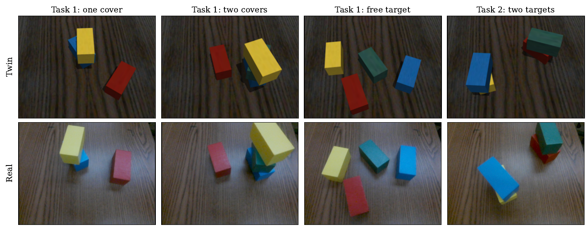
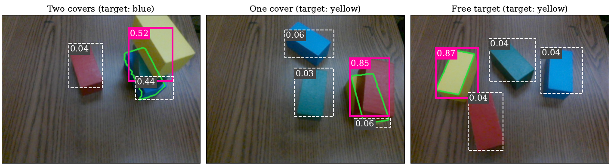

Unveiler separates which object to remove from how to manipulate it: a Spatial Relationship Encoder picks the next object, and an independent Action Decoder executes the removal.

Sequential manipulation in clutter requires selecting which objects to remove and determining how to manipulate them. Learning both decisions jointly can complicate training and make failures difficult to diagnose. We present Unveiler, a modular framework that separates scene reasoning and object selection from action execution through a discrete object-index interface. Its Spatial Relationship Encoder (SRE) selects the best object to grasp, while a separate Action Decoder generates orientation-discretized push-grasp actions. The SRE is trained in two stages: imitation learning from heuristic demonstrations, followed by search-based policy improvement using simulated object removals. This training procedure requires no real-robot training data and allows the SRE to be paired with a different execution policy. We evaluate Unveiler in PyBullet simulation and on a physical Dofbot-Pro. In real-robot experiments, it retrieves two occluded targets in the prescribed order in 90% of scenes, compared with 20–30% for the heuristic, GPT-4o, and the imitation-only variant. In PyBullet, Unveiler achieves the highest task-completion rate across all six clutter-density and occlusion conditions, reaching 90.0% under full occlusion with 6–9 objects, compared with 67.5% for the heuristic and 60.0% for ThinkGrasp. These results demonstrate the potential of modular, object-centric spatial reasoning for sequential manipulation in clutter.
The Spatial Relationship Encoder (SRE) reasons over object-centric features of the scene and outputs the index of the next object to remove. An independent Action Decoder turns that index into an orientation-discretized push-grasp action. Because the two modules communicate only through a discrete object index, the selection policy can be trained in simulation and deployed with a different manipulation system.

The SRE is trained in two stages: imitation learning from heuristic demonstrations, followed by search-based policy improvement using simulated object removals. On the real robot, the SRE is paired with the robot's own pick-and-place primitive.
A Dofbot-Pro retrieving covered blocks. Magenta outline: block selected for removal. Green outline: target being grasped. p is the SRE's probability for its selection. Footage is sped up 4–5×.
Each target lies under its own block. Unveiler uncovers and grasps red, then uncovers and grasps green.
One blue block lies across both targets. Unveiler removes it first; GPT-4o reaches for the green target while the blue block still covers it.
Unveiler removes yellow, then green, then grasps the target. GPT-4o removes red, which covers nothing, then selects the still-covered target.
Nothing needs to be removed, and both Unveiler and GPT-4o grasp the target directly.
| Task 1 | Task 2 | |||||
|---|---|---|---|---|---|---|
| Method | Success (%) | Sel. (%) | Steps | Success (%) | Sel. (%) | Steps |
| GPT-4o | 30 | 45.0 | 2.0 | 20 | 55.6 | 2.7 |
| Heuristic | 40 | 70.6 | 1.7 | 20 | 71.4 | 2.1 |
| Imitation only | 40 | 69.2 | 2.6 | 30 | 75.0 | 2.8 |
| Unveiler (Ours) | 70 | 85.7 | 2.1 | 90 | 100 | 3.4 |

In PyBullet, we vary the clutter density (number of objects) and whether the target is partially or fully occluded.
| 2–6 objects | 6–9 objects | 9–12 objects | ||||
|---|---|---|---|---|---|---|
| Method | Partial | Full | Partial | Full | Partial | Full |
| GPT-4o | 86.0 | 66.7 | 80.0 | 60.0 | 66.7 | 26.7 |
| CLIP-Grounding | 80.5 | 60.3 | 67.2 | 66.7 | 53.0 | 20.0 |
| VILG | 75.0 | 50.0 | 80.0 | 40.0 | 46.7 | 33.3 |
| ThinkGrasp | 73.3 | 53.3 | 66.7 | 60.0 | 46.7 | 33.3 |
| PPG | 40.6 | 50.3 | 7.5 | 4.4 | 4.4 | — |
| Heuristic | 87.3 | 67.5 | 67.5 | 47.8 | 50.0 | 20.0 |
| Unveiler (Ours) | 96.1 | 89.3 | 97.6 | 90.0 | 92.6 | 53.8 |
| 2–6 objects | 6–9 objects | 9–12 objects | ||||
|---|---|---|---|---|---|---|
| Method | Partial | Full | Partial | Full | Partial | Full |
| GPT-4o | 1.50 | 2.50 | 1.81 | 4.22 | 3.10 | 3.00 |
| CLIP-Grounding | 1.67 | 2.11 | 3.10 | 4.20 | 4.38 | 4.67 |
| VILG | 3.00 | 2.86 | 3.17 | 3.33 | 2.86 | 3.40 |
| ThinkGrasp | 3.00 | 2.25 | 3.29 | 3.78 | 3.42 | 3.56 |
| PPG | 4.42 | 4.27 | 6.00 | 3.00 | 4.00 | — |
| Heuristic | 2.35 | 2.30 | 2.55 | 3.43 | 3.40 | 3.17 |
| Unveiler (Ours) | 1.32 | 1.87 | 1.43 | 3.31 | 2.86 | 3.71 |


@misc{eze2026unveiler,
title = {Learning Object-Centric Spatial Reasoning for Sequential
Manipulation in Cluttered Environments},
author = {Eze, Chrisantus and Julian, Ryan C. and Crick, Christopher},
year = {2026},
note = {Under review}
}